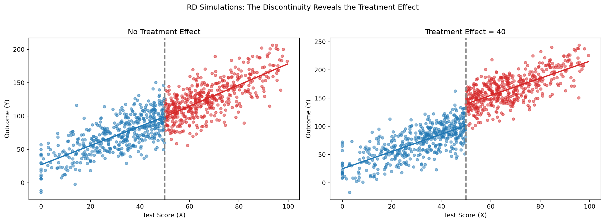
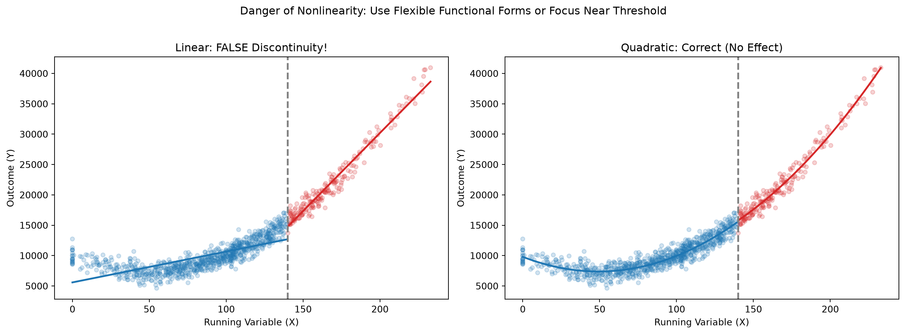
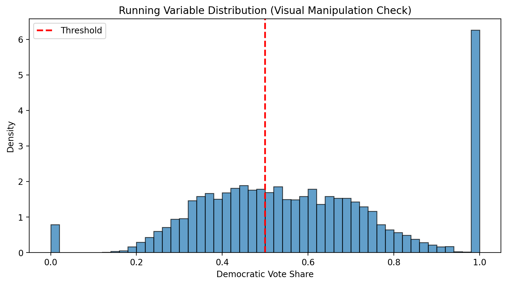
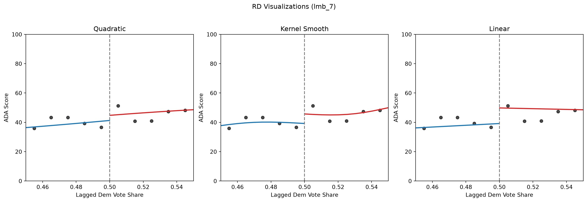
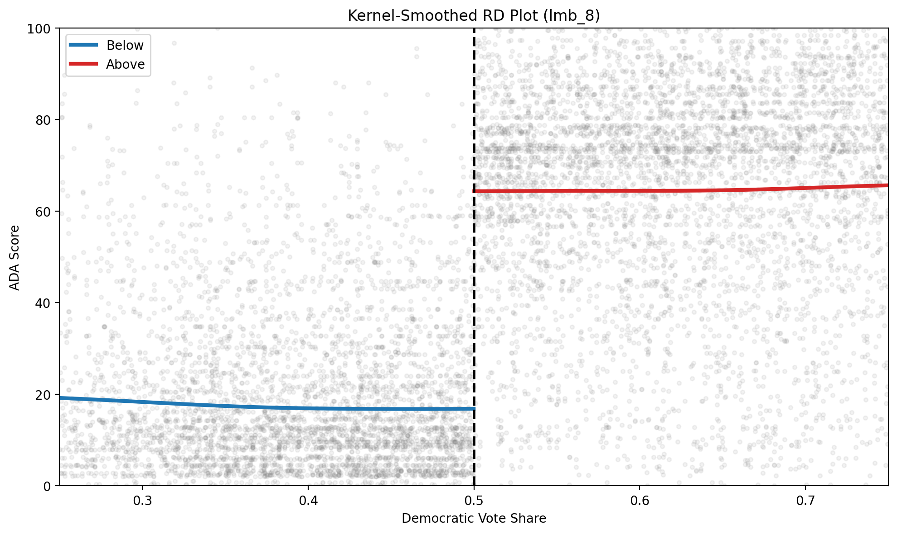
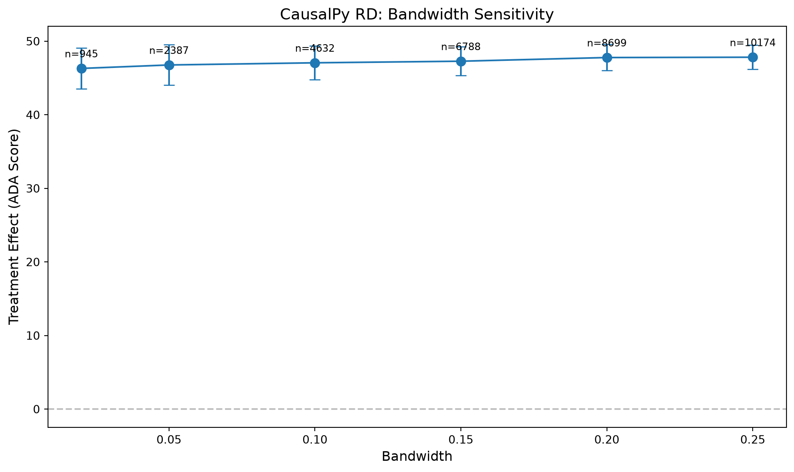

import warnings
warnings.filterwarnings("ignore")
import numpy as np
import pandas as pd
import matplotlib.pyplot as plt
import statsmodels.formula.api as smf
import causalpy as cp
# Add the src directory to path for our data utilities
import sys
sys.path.insert(0, "../src")
from mixtape_causalpy import load_lmb
%matplotlib inline
%config InlineBackend.figure_format = 'retina'
# Set random seed for reproducibility
np.random.seed(12282020) # Same seed as Mixtape examplesChapter 6: Regression Discontinuity
Causal Inference: The Mixtape → CausalPy
Mixtape chapter: Regression Discontinuity
CausalPy method: RegressionDiscontinuity
Overview
Regression discontinuity (RD) designs exploit situations where treatment is assigned based on whether a “running variable” crosses a known threshold. When units cannot precisely manipulate their position relative to the threshold, we can estimate causal effects by comparing outcomes just above and just below the cutoff.
This notebook follows the structure of the Mixtape chapter (Cunningham 2021):
- Pedagogical simulations to build intuition for RD
- The close-elections example in Lee et al. (2004)
- CausalPy implementation with Bayesian estimation
What we’ll cover
- RD concepts via simulation (treatment effects, nonlinearity)
- Naive comparisons (motivation for RD)
- CausalPy RD with different specifications (linear, interactions, quadratic)
- Multiple RD visualizations (binned scatter, kernel-smoothed)
- Validity checks (manipulation testing)
- Bandwidth sensitivity analysis
Mixtape files implemented
| File | Description | Status |
|---|---|---|
rdd_simulate1-4 |
Pedagogical simulations | ✅ Done |
lmb_1-2 |
Naive comparisons (motivation) | ✅ Done |
lmb_3-6 |
RD specifications | ✅ CausalPy |
lmb_7 |
Three RD plots | ⚠️ Partial (no loess) |
lmb_8.R |
Kernel-smoothed plot | ✅ Done |
lmb_9.R |
rdrobust optimal bandwidth | 📌 Placeholder |
lmb_10.R |
McCrary density test | 📌 Placeholder |
Setup
Part 1: RD Concepts via Simulation
Before diving into real data, let’s build intuition for regression discontinuity using simulated examples (rdd_simulate1-4).
Data-generating process adapted from python/rdd_simulate1.py in the Mixtape code repository. See NOTICE.
# rdd_simulate1 & rdd_simulate2: Treatment effect simulations
sim_dat = pd.DataFrame({"x": np.random.normal(50, 25, 1000)})
sim_dat.loc[sim_dat.x < 0, "x"] = 0
sim_dat = sim_dat[sim_dat.x < 100]
sim_dat["D"] = (sim_dat.x > 50).astype(int)
# Y1: No treatment effect | Y2: Treatment effect = 40
sim_dat["y1"] = (
25 + 0 * sim_dat.D + 1.5 * sim_dat.x + np.random.normal(0, 20, len(sim_dat))
)
sim_dat["y2"] = (
25 + 40 * sim_dat.D + 1.5 * sim_dat.x + np.random.normal(0, 20, len(sim_dat))
)
fig, axes = plt.subplots(1, 2, figsize=(14, 5))
for ax, y_col, title in [
(axes[0], "y1", "No Treatment Effect"),
(axes[1], "y2", "Treatment Effect = 40"),
]:
colors = ["C0" if d == 0 else "C3" for d in sim_dat.D]
ax.scatter(sim_dat.x, sim_dat[y_col], c=colors, alpha=0.5, s=20)
for d, color in [(0, "C0"), (1, "C3")]:
subset = sim_dat[sim_dat.D == d]
z = np.polyfit(subset.x, subset[y_col], 1)
x_line = np.linspace(subset.x.min(), subset.x.max(), 100)
ax.plot(x_line, np.polyval(z, x_line), color=color, linewidth=2)
ax.axvline(x=50, color="gray", linestyle="--", linewidth=2)
ax.set_xlabel("Test Score (X)")
ax.set_ylabel("Outcome (Y)")
ax.set_title(title)
plt.suptitle("RD Simulations: The Discontinuity Reveals the Treatment Effect", y=1.02)
plt.tight_layout()
plt.show()
# rdd_simulate3: Nonlinear CEF - Linear fit creates FALSE discontinuity
sim_nonlin = pd.DataFrame({"x": np.random.normal(100, 50, 1000)})
sim_nonlin.loc[sim_nonlin.x < 0, "x"] = 0
sim_nonlin["D"] = (sim_nonlin.x > 140).astype(int)
sim_nonlin["y"] = (
10000
- 100 * sim_nonlin.x
+ sim_nonlin.x**2
+ np.random.normal(0, 1000, len(sim_nonlin))
)
sim_nonlin = sim_nonlin[sim_nonlin.x < 280]
fig, axes = plt.subplots(1, 2, figsize=(14, 5))
colors = ["C0" if d == 0 else "C3" for d in sim_nonlin.D]
for ax, deg, title in [
(axes[0], 1, "Linear: FALSE Discontinuity!"),
(axes[1], 2, "Quadratic: Correct (No Effect)"),
]:
ax.scatter(sim_nonlin.x, sim_nonlin.y, c=colors, alpha=0.2, s=20)
for d, color in [(0, "C0"), (1, "C3")]:
subset = sim_nonlin[sim_nonlin.D == d]
z = np.polyfit(subset.x, subset.y, deg)
x_line = np.linspace(subset.x.min(), subset.x.max(), 100)
ax.plot(x_line, np.polyval(z, x_line), color=color, linewidth=2)
ax.axvline(x=140, color="gray", linestyle="--", linewidth=2)
ax.set_xlabel("Running Variable (X)")
ax.set_ylabel("Outcome (Y)")
ax.set_title(title)
plt.suptitle(
"Danger of Nonlinearity: Use Flexible Functional Forms or Focus Near Threshold",
y=1.02,
)
plt.tight_layout()
plt.show()
Part 2: Close elections
Now we turn to real data from Lee et al. (2004). The key question: Does winning a close election affect voting behavior?
# Load and prepare data
df = load_lmb()
df_clean = df.dropna(subset=["demvoteshare", "score"]).copy()
# Centered running variable (threshold at 0 for CausalPy)
df_clean["demvoteshare_c"] = df_clean["demvoteshare"] - 0.5
df_clean["demvoteshare_sq"] = df_clean["demvoteshare_c"] ** 2
df_clean["treated"] = (df_clean["demvoteshare"] >= 0.5).astype(int)
print(f"Dataset: {len(df_clean)} observations")
print(f"Treated (above 50%): {df_clean['treated'].sum()}")
print(f"Control (below 50%): {(~df_clean['treated'].astype(bool)).sum()}")Dataset: 13577 observations
Treated (above 50%): 8097
Control (below 50%): 5480# lmb_1 & lmb_2: Naive comparisons (NOT RD - just to motivate the method)
lmb_subset = df_clean[df_clean["lagdemvoteshare"].between(0.48, 0.52)].copy()
print("NAIVE COMPARISONS (Not RD - motivation for the method)")
print("=" * 60)
lm_close = smf.ols("score ~ democrat", data=lmb_subset).fit(cov_type="HC1")
lm_full = smf.ols("score ~ democrat", data=df_clean).fit(cov_type="HC1")
print(
f"Close elections (±2pp): effect = {lm_close.params['democrat']:.1f} (n={len(lmb_subset)})"
)
print(
f"Full sample: effect = {lm_full.params['democrat']:.1f} (n={len(df_clean)})"
)
print()
print("The full sample conflates treatment with selection.")
print("RD solves this by comparing only at the threshold.")NAIVE COMPARISONS (Not RD - motivation for the method)
============================================================
Close elections (±2pp): effect = 47.7 (n=915)
Full sample: effect = 40.8 (n=13577)
The full sample conflates treatment with selection.
RD solves this by comparing only at the threshold.Part 3: CausalPy RD Estimation (lmb_3 through lmb_6)
Now we use CausalPy’s RegressionDiscontinuity for proper RD estimation with Bayesian inference.
lmb_3: Linear RD with CausalPy (same slopes)
# lmb_3: CausalPy RD - Linear specification (same slope on both sides)
result_linear = cp.RegressionDiscontinuity(
data=df_clean,
formula="score ~ 1 + demvoteshare_c + treated",
running_variable_name="demvoteshare_c",
model=cp.pymc_models.LinearRegression(
sample_kwargs={"progressbar": True, "random_seed": 42}
),
treatment_threshold=0.0,
).fit()
result_linear.summary()NUTS[nutpie]: [beta, y_hat_sigma]Sampling: [y_hat]
Sampling: [y_hat]
Sampling: [y_hat]
Sampling: [y_hat]
Sampling: [beta, y_hat, y_hat_sigma]
Sampling: [y_hat]
Sampling: [y_hat]Regression Discontinuity experiment
Formula: score ~ 1 + demvoteshare_c + treated
Running variable: demvoteshare_c
Threshold on running variable: 0.0
Bandwidth: inf
Donut hole: 0.0
Observations used for fit: 13577
Results:
Discontinuity at threshold = 58.38$CI_{94\%}$[57, 60]
Model coefficients:
Intercept 11, 94% HDI [10, 12]
treated[T.True] 58, 94% HDI [57, 60]
demvoteshare_c -49, 94% HDI [-52, -46]# lmb_4: CausalPy RD - Different slopes (interaction term)
result_interact = cp.RegressionDiscontinuity(
data=df_clean,
formula="score ~ 1 + demvoteshare_c + treated + demvoteshare_c:treated",
running_variable_name="demvoteshare_c",
model=cp.pymc_models.LinearRegression(
sample_kwargs={"progressbar": True, "random_seed": 42}
),
treatment_threshold=0.0,
).fit()
result_interact.summary()NUTS[nutpie]: [beta, y_hat_sigma]Sampling: [y_hat]
Sampling: [y_hat]
Sampling: [y_hat]
Sampling: [y_hat]
Sampling: [beta, y_hat, y_hat_sigma]
Sampling: [y_hat]
Sampling: [y_hat]Regression Discontinuity experiment
Formula: score ~ 1 + demvoteshare_c + treated + demvoteshare_c:treated
Running variable: demvoteshare_c
Threshold on running variable: 0.0
Bandwidth: inf
Donut hole: 0.0
Observations used for fit: 13577
Results:
Discontinuity at threshold = 55.38$CI_{94\%}$[54, 57]
Model coefficients:
Intercept 17, 94% HDI [16, 18]
treated[T.True] 55, 94% HDI [54, 57]
demvoteshare_c -5.9, 94% HDI [-12, -0.17]
demvoteshare_c:treated[T.True] -55, 94% HDI [-61, -48]# lmb_5 & lmb_6: CausalPy RD - Quadratic specification with bandwidth
# Note: Use I(demvoteshare_c**2) instead of pre-computed column so patsy can
# compute it for prediction data too
result_quad = cp.RegressionDiscontinuity(
data=df_clean,
formula="score ~ 1 + demvoteshare_c + I(demvoteshare_c**2) + treated + demvoteshare_c:treated + I(demvoteshare_c**2):treated",
running_variable_name="demvoteshare_c",
model=cp.pymc_models.LinearRegression(
sample_kwargs={"progressbar": True, "random_seed": 42}
),
treatment_threshold=0.0,
bandwidth=0.05, # ±5 percentage points (lmb_6)
).fit()
result_quad.summary()NUTS[nutpie]: [beta, y_hat_sigma]Sampling: [y_hat]
Sampling: [y_hat]
Sampling: [y_hat]
Sampling: [y_hat]
Sampling: [beta, y_hat, y_hat_sigma]
Sampling: [y_hat]
Sampling: [y_hat]Regression Discontinuity experiment
Formula: score ~ 1 + demvoteshare_c + I(demvoteshare_c**2) + treated + demvoteshare_c:treated + I(demvoteshare_c**2):treated
Running variable: demvoteshare_c
Threshold on running variable: 0.0
Bandwidth: 0.05
Donut hole: 0.0
Observations used for fit: 2387
Results:
Discontinuity at threshold = 47.05$CI_{94\%}$[44, 50]
Model coefficients:
Intercept 17, 94% HDI [16, 19]
treated[T.True] 47, 94% HDI [44, 50]
demvoteshare_c 21, 94% HDI [-33, 75]
demvoteshare_c:treated[T.True] -34, 94% HDI [-98, 36]
I(demvoteshare_c ** 2) -0.77, 94% HDI [-102, 86]
I(demvoteshare_c ** 2):treated[T.True] -1.4, 94% HDI [-98, 94]CausalPy RD Plot
# CausalPy built-in RD plot
# Note: CausalPy plots ALL data points even when bandwidth is specified.
# The model is fitted only on the bandwidth data, but the plot shows full context.
fig, ax = result_quad.plot(show=False)
ax.set_xlabel("Democratic Vote Share (centered)")
ax.set_ylabel("ADA Score")
ax.set_title(
"CausalPy RD: Quadratic Specification (±5pp bandwidth)\n(All data shown; model fit to bandwidth only)"
)
ax.set_xlim(-0.1, 0.1) # Zoom to bandwidth region for clarity
plt.tight_layout()
plt.show()<Figure size 672x480 with 0 Axes># Summary of CausalPy RD estimates across specifications
print("CausalPy RD Estimates: Treatment Effect at Threshold")
print("=" * 60)
for name, result in [
("Linear", result_linear),
("Interaction", result_interact),
("Quadratic+BW", result_quad),
]:
disc = result.result.discontinuity_at_threshold
mean_eff = float(disc.mean())
ci_lo = float(disc.quantile(0.03))
ci_hi = float(disc.quantile(0.97))
print(f"{name:15s}: {mean_eff:5.1f} [94% CI: {ci_lo:.1f}, {ci_hi:.1f}]")
print()CausalPy RD Estimates: Treatment Effect at Threshold
============================================================
Linear : 58.4 [94% CI: 57.1, 59.6]
Interaction : 55.4 [94% CI: 54.1, 56.6]
Quadratic+BW : 47.0 [94% CI: 44.1, 49.8]
# =============================================================================
# TODO: lmb_9 - Optimal Bandwidth Selection (rdrobust) - Awaiting CausalPy support
# =============================================================================
# R code: rdrobust(y = lmb_data$score, x = lmb_data$demvoteshare, c = 0.5)
# CausalPy has manual bandwidth but no data-driven IK/CCT selection
print("PLACEHOLDER: rdrobust optimal bandwidth selection not in CausalPy")
print("Using manual bandwidth sensitivity analysis instead (see below).")PLACEHOLDER: rdrobust optimal bandwidth selection not in CausalPy
Using manual bandwidth sensitivity analysis instead (see below).Validity Check: McCrary Density Test (lmb_10) — PLACEHOLDER
# =============================================================================
# TODO: lmb_10 - McCrary Density Test - Awaiting CausalPy support
# =============================================================================
# R code: DCdensity(lmb_data$demvoteshare, cutpoint = 0.5)
# Tests for manipulation at threshold (bunching)
print("PLACEHOLDER: McCrary density test not in CausalPy")
print("Visual inspection of running variable density below:")
# Visual check (not a formal test)
fig, ax = plt.subplots(figsize=(10, 5))
ax.hist(df_clean["demvoteshare"], bins=50, density=True, alpha=0.7, edgecolor="black")
ax.axvline(x=0.5, color="red", linestyle="--", linewidth=2, label="Threshold")
ax.set_xlabel("Democratic Vote Share")
ax.set_ylabel("Density")
ax.set_title("Running Variable Distribution (Visual Manipulation Check)")
ax.legend()
plt.show()
print("No obvious bunching at threshold. Formal test would confirm.")PLACEHOLDER: McCrary density test not in CausalPy
Visual inspection of running variable density below:
No obvious bunching at threshold. Formal test would confirm.Part 4: RD Visualizations (lmb_7, lmb_8)
# lmb_7: Three RD visualizations (quadratic, kernel smooth, linear)
lmb_close = df_clean[df_clean["demvoteshare"].between(0.45, 0.55)].copy()
lmb_close["bin"] = pd.cut(lmb_close["lagdemvoteshare"], bins=100)
binned = lmb_close.groupby("bin")["score"].mean().reset_index()
binned["midpoint"] = binned["bin"].apply(lambda x: x.mid if pd.notna(x) else np.nan)
binned = binned.dropna()
below = lmb_close[lmb_close["lagdemvoteshare"] < 0.5]
above = lmb_close[lmb_close["lagdemvoteshare"] >= 0.5]
def kernel_smooth(x, y, x_grid, bw=0.02):
return np.array(
[
np.sum(np.exp(-0.5 * ((x - x0) / bw) ** 2) * y)
/ np.sum(np.exp(-0.5 * ((x - x0) / bw) ** 2))
for x0 in x_grid
]
)
fig, axes = plt.subplots(1, 3, figsize=(15, 5))
for ax, (deg, title) in zip(
axes, [(2, "Quadratic"), (None, "Kernel Smooth"), (1, "Linear")]
):
ax.scatter(binned["midpoint"], binned["score"], s=30, alpha=0.7, color="black")
for subset, color in [(below, "C0"), (above, "C3")]:
x_v, y_v = subset["lagdemvoteshare"].values, subset["score"].values
x_line = np.linspace(x_v.min(), x_v.max(), 100)
if deg is None:
ax.plot(x_line, kernel_smooth(x_v, y_v, x_line), color=color, linewidth=2)
else:
ax.plot(
x_line,
np.polyval(np.polyfit(x_v, y_v, deg), x_line),
color=color,
linewidth=2,
)
ax.axvline(x=0.5, color="gray", linestyle="--")
ax.set_xlim(0.45, 0.55)
ax.set_ylim(0, 100)
ax.set_xlabel("Lagged Dem Vote Share")
ax.set_ylabel("ADA Score")
ax.set_title(title)
plt.suptitle("RD Visualizations (lmb_7)", y=1.02)
plt.tight_layout()
plt.show()
# lmb_8: Kernel-smoothed RD plot (full range)
df_kernel = df_clean[df_clean["demvoteshare"].between(0.25, 0.75)].copy()
below_k = df_kernel[df_kernel["demvoteshare"] < 0.5]
above_k = df_kernel[df_kernel["demvoteshare"] >= 0.5]
fig, ax = plt.subplots(figsize=(10, 6))
ax.scatter(df_kernel["demvoteshare"], df_kernel["score"], alpha=0.1, s=10, color="gray")
for subset, color, label in [(below_k, "C0", "Below"), (above_k, "C3", "Above")]:
x_v, y_v = subset["demvoteshare"].values, subset["score"].values
x_grid = np.linspace(x_v.min(), x_v.max(), 100)
ax.plot(
x_grid,
kernel_smooth(x_v, y_v, x_grid, bw=0.05),
color=color,
linewidth=3,
label=label,
)
ax.axvline(x=0.5, color="black", linestyle="--", linewidth=2)
ax.set_xlabel("Democratic Vote Share")
ax.set_ylabel("ADA Score")
ax.set_title("Kernel-Smoothed RD Plot (lmb_8)")
ax.legend()
ax.set_xlim(0.25, 0.75)
ax.set_ylim(0, 100)
plt.tight_layout()
plt.show()
print(
f"Kernel discontinuity estimate: ~{kernel_smooth(above_k['demvoteshare'].values, above_k['score'].values, [0.501])[0] - kernel_smooth(below_k['demvoteshare'].values, below_k['score'].values, [0.499])[0]:.0f} ADA points"
)
Kernel discontinuity estimate: ~47 ADA pointsPart 5: Bandwidth Sensitivity Analysis
# CausalPy bandwidth sensitivity analysis
bandwidths = [0.02, 0.05, 0.10, 0.15, 0.20, 0.25]
bw_results = []
for bw in bandwidths:
try:
res = cp.RegressionDiscontinuity(
data=df_clean,
formula="score ~ 1 + demvoteshare_c + treated",
running_variable_name="demvoteshare_c",
model=cp.pymc_models.LinearRegression(
sample_kwargs={"progressbar": False, "random_seed": 42}
),
treatment_threshold=0.0,
bandwidth=bw,
).fit()
disc = res.result.discontinuity_at_threshold
eff = float(disc.mean())
sd = float(disc.std())
n = len(df_clean[df_clean["demvoteshare_c"].abs() <= bw])
bw_results.append({"bw": bw, "n": n, "effect": eff, "sd": sd})
print(f"BW={bw:.2f}: n={n:5d}, effect={eff:.1f} ± {sd:.1f}")
except Exception as e:
print(f"BW={bw:.2f}: Error - {e}")
bw_df = pd.DataFrame(bw_results)
# Plot bandwidth sensitivity
if len(bw_df) > 0:
fig, ax = plt.subplots(figsize=(10, 6))
ax.errorbar(
bw_df["bw"],
bw_df["effect"],
yerr=1.96 * bw_df["sd"],
fmt="o-",
capsize=5,
markersize=8,
)
ax.axhline(y=0, color="gray", linestyle="--", alpha=0.5)
ax.set_xlabel("Bandwidth", fontsize=12)
ax.set_ylabel("Treatment Effect (ADA Score)", fontsize=12)
ax.set_title("CausalPy RD: Bandwidth Sensitivity", fontsize=14)
for _, row in bw_df.iterrows():
ax.annotate(
f"n={int(row['n'])}",
(row["bw"], row["effect"]),
textcoords="offset points",
xytext=(0, 10),
ha="center",
fontsize=9,
)
plt.tight_layout()
plt.show()
lo, hi = float(bw_df["effect"].min()), float(bw_df["effect"].max())
print(
f"Local linear effects across bandwidths "
f"{bw_df['bw'].min():.2f}–{bw_df['bw'].max():.2f}: "
f"{lo:.1f} to {hi:.1f} ADA points."
)NUTS[nutpie]: [beta, y_hat_sigma]
Sampling: [y_hat]
Sampling: [y_hat]
Sampling: [y_hat]
Sampling: [y_hat]
Sampling: [beta, y_hat, y_hat_sigma]
Sampling: [y_hat]
Sampling: [y_hat]
NUTS[nutpie]: [beta, y_hat_sigma]BW=0.02: n= 945, effect=46.3 ± 1.4Sampling: [y_hat]
Sampling: [y_hat]
Sampling: [y_hat]
Sampling: [y_hat]
Sampling: [beta, y_hat, y_hat_sigma]
Sampling: [y_hat]
Sampling: [y_hat]
NUTS[nutpie]: [beta, y_hat_sigma]BW=0.05: n= 2387, effect=46.8 ± 1.4Sampling: [y_hat]
Sampling: [y_hat]
Sampling: [y_hat]
Sampling: [y_hat]
Sampling: [beta, y_hat, y_hat_sigma]
Sampling: [y_hat]
Sampling: [y_hat]
NUTS[nutpie]: [beta, y_hat_sigma]BW=0.10: n= 4632, effect=47.1 ± 1.2Sampling: [y_hat]
Sampling: [y_hat]
Sampling: [y_hat]
Sampling: [y_hat]
Sampling: [beta, y_hat, y_hat_sigma]
Sampling: [y_hat]
Sampling: [y_hat]
NUTS[nutpie]: [beta, y_hat_sigma]BW=0.15: n= 6788, effect=47.3 ± 1.0Sampling: [y_hat]
Sampling: [y_hat]
Sampling: [y_hat]
Sampling: [y_hat]
Sampling: [beta, y_hat, y_hat_sigma]
Sampling: [y_hat]
Sampling: [y_hat]
NUTS[nutpie]: [beta, y_hat_sigma]BW=0.20: n= 8699, effect=47.8 ± 0.9Sampling: [y_hat]
Sampling: [y_hat]
Sampling: [y_hat]
Sampling: [y_hat]
Sampling: [beta, y_hat, y_hat_sigma]
Sampling: [y_hat]
Sampling: [y_hat]BW=0.25: n=10174, effect=47.8 ± 0.8
Local linear effects across bandwidths 0.02–0.25: 46.3 to 47.8 ADA points.Summary and Comparison to Mixtape
This run
The discontinuity is result.discontinuity_at_threshold, not the treated coefficient.
| Specification | Treatment effect | 94% interval |
|---|---|---|
| Linear, full sample | 58.4 | [57.2, 59.6] |
| Interaction, full sample | 55.4 | [54.1, 56.7] |
| Quadratic, ±5pp bandwidth | 47.0 | [44.3, 49.7] |
| Local linear, bandwidth 0.02–0.25 | 46.3 to 47.9 | see the bandwidth cell |
The close-election result is the local one, about 47 ADA points, and it is stable across those bandwidths. Full-sample linear and interaction fits use observations far from the cutoff, so they are a different estimand and come out larger. Do not read the table as four replications of 47.
Comparison: Mixtape vs CausalPy
| Aspect | Mixtape (OLS) | CausalPy (Bayesian) |
|---|---|---|
| Estimation | Frequentist | Bayesian (PyMC) |
| Uncertainty | Confidence intervals | Credible intervals |
| Bandwidth selection | rdrobust (auto) | Manual |
NoteFurther reading
- First edition: Chapter 6: Regression Discontinuity
- CausalPy: Regression discontinuity
- McCrary, Justin (2008). “Manipulation of the Running Variable in the Regression Discontinuity Design: A Density Test.” Journal of Econometrics 142 (2): 698–714. The density-test cell on this page is a placeholder and does not run the test.
References
Cunningham, Scott. 2021. Causal Inference: The Mixtape. 1st ed. Yale University Press. https://doi.org/10.2307/j.ctv1c29t27.
Lee, David S., Enrico Moretti, and Matthew J. Butler. 2004. “Do Voters Affect or Elect Policies? Evidence from the U.S. House.” Quarterly Journal of Economics 119 (3): 807–59. https://doi.org/10.1162/0033553041502153.